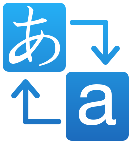

Firefox Translations Changelog
Firefox Translations is a webextension developed by Mozilla that enables client side in-page translation for Firefox.
You can send suggestions or report issues to the team via any of the channels below:
You can also rate and leave us a comment on Mozilla Addons.
Changed
- Stop showing address bar icon and notification bar when the built-in version is enabled
Changed
- Fix UI's summoning via browser action on Android
Changed
- Added support for dark mode in the translation popup
Added
- Support for the translation popup on Android
Changed
- User interface improvements
Added
- Android support
- Persist input text for 60 seconds after translation popup is closed
- Detect language from text input in the translation popup
- Auto-translate when text is pasted into translation popup
- Ability to translate selected text in the page
- Add autofocus to input textarea in translation popup
Changed
- User interface bugfixes and improvements
Added
- Popup page that allows the user to freely input text to be translated
- Option to translate to a target language different than the browser's default
- Option to return page to original state
- The language pair currently in use is now being displayed in the translation bar
- Introduces option to prevent the translation bar from being displayed
Changed
- Fixed user interface and localization issues.
- The display of the changelog now happens upon the user's choice on about:addons and in the options button.
- Renewal of telemetry metrics
- Normalization of language codes across the extension
Added
Changed
- Fixed caching of assets across updates that was breaking updates.
- Fixed changelog issues
- Remove obsolete key (applications) from manifest
- Fixed issues where editable elements were being translated and breaking sites like Twitter
Added
- Ukrainian models
- French models
- Polish models
- English to Dutch model
- Changelog (this page!)
Changed
- Improved language detection that now takes into account the language set in the page's markup
- UI is now responsive which fix issues that was extrapolating and cutting the window and breaking Firefox controls.
- "Translation Preferences" in the options button now redirects to the Firefox Translations panel in about:preferences
- Fixed the stopgap solution of translating in permanent private browsing mode
- New high resolution icon
- "Never translate this site" in the options button is now a checkbox
- PageAction icon is now white
- Restrict minimum version to what's compatible with the wasm engine
- Fixes crypto UUID issues preventing telemetry from being submitted on Fx earlier than 93
- Makes translation bar compatible with Fx versions earlier than 95
- Improved in-page translation
- Issues when translation of forms is incompatible with the page are fixed
- Properly display errors when the tab contains incompatible documents
- Translation bar is now displayed when the tab is dragged or moved between windows
- Minor user interface improvements
Removed
- Survey button.
- Wormhole artifacts
Added
- Support for private browsing mode
- Public release on Mozilla Addons
Changed
- Improved in-page translations
- Improved language detection
Added
- Telemetry
- Bulgarian models
- Icelandic models
- Norwegian Bokmål models
- Norwegian Nynorsk
- Persian models
- Localization of user interface
- Intrinsics for native matmul acceleration in Nightly
- Error highlighting
- PageAction to trigger the translation bar
- Survey button
- Support for non x86 architecture
- Auto-translate as browse
- Error reporting using Sentry
Changed
- Improved language detection
- Improved translation of forms
- Improved in-page translations
- Improved error handling
- Fixes and improvements on user interface
- Improved translation worker
- Improved translation engine
- Improved Portuguese models
- Improved Italian models
- Improved translation of frames
- Ship translation engine instead of download it
Removed
Added
- Release of the first developer version.
- Translation of forms
- In-Page translations
- Dynamic download of models and engine
- Translation pivoting
- New User Interface
- Refactoring of the legacy version
- Stats mode
- Incorporation
- Italian models
- Portuguese models
- English models
- Russian models
- Czech models
- German models
- Spanish models
- Estonian models